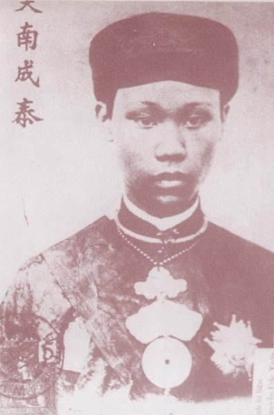

Có lần vua Thành Thái đi bách bộ trên cầu Gia Hội, gặp một người vác mấy cây tre, lính vội chạy lên dẹp đường. Nhà vua bảo:
- Mình dân không phải là dân, vua không phải là vua, tại sao dẹp người ta làm chi? "
Vua Thành Thái thường đi bắn ở Cổ Bị cách Huế 30 cây số ), hay ghé chơi các làng dọc bờ sông Bồ. Vào làng vua thường cho trải chiếu ngồi giữa đất. Thế là dân làng vây quanh để xem mặt vua. Nhà vua hỏi dân muốn xem chi, dân chỉ nói muốn xem bắn, nhà vua bắn cho họ xem.
Lại có lúc nhà vua cải trang một người ăn mày và thực hành nghề nghiệp ấy. Ai cho gì, nhà vua cũng nhận. Chắc nhà vua muốn " thử chơi cho biết " để hiểu sâu sắc hơn nỗi đau trần thế!
Nhưng có lẽ cuộc vi hành thú vị nhất là nhà vua cải trang thành một thư sinh nho nhã lên Kim Long chơi. Sau khi thăm đủ nơi chốn trên vùng đất thanh lịch này, ông cùng với mấy người tùy tùng bước xuống bến Đò. Bỗng thấy cô lái đó xinh đẹp, nhà vua xuống gợi chuyện. Đò mới ra bến, nhă vua ỡm ờ hỏi cô gâi:
- " Này, có ưng làm vợ vua không? ".
Ngây thơ chẳng biết đó là vua cải trang, nàng nửa đùa nửa thật đánh bạo nói: " Ưng ".
Thế là nhà vua đứng dậy cầm tay nàng kéo ra mũi thuyền, bước nhanh ra sau đò cầm lái, giành lấy tay chèo từ tay người đẹp, đích thân chèo cho đò xuôi dòng Hương từ Kim Long đến bến Nghinh Lương trước Phu Vân Lâu. Đò cặp bến, nhà vua rước nàng " đưa em vào Nội ", thể theo lời nguyện ước của nàng.
Thật là một lối tuyển cung phi mới lạ! Chỉ có vua Thành Thái mới có sáng kiến ấy. Câu ca dao:
Kim Long có gái mỹ miều
Trẫm thương, Trẫm nhớ Trẫm liều Trẫm đi
hẳn xuất phát từ giai thọai này.
